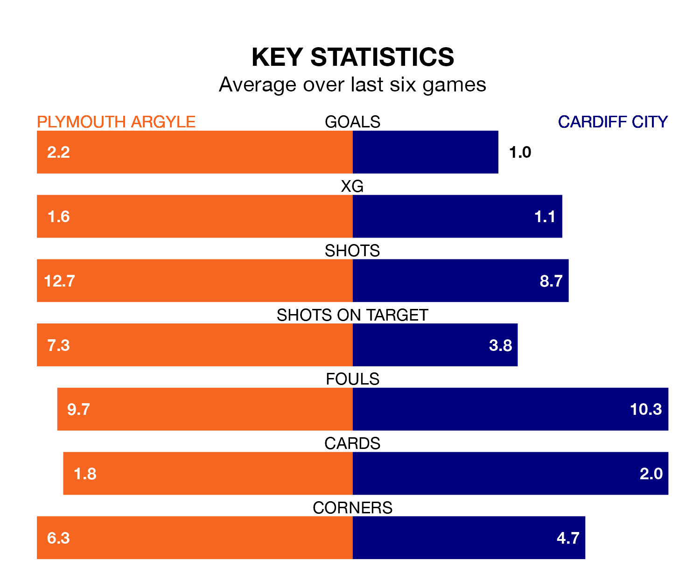

Plymouth Argyle face Cardiff City at Home Park on Saturday looking to secure a first win in six EFL Championship games.
The Pilgrims have lost one and drawn four matches since they last earned three points – against Rotherham United on December 16.
They face a Cardiff side who have won two and drawn one over that time.
With 44 goals in 27 games so far this season, Plymouth are scoring more than average in the league with 1.6 goals per game. But they are conceding more than average too, letting in 46 goals at a rate of 1.7 per game.
Cardiff, meanwhile, are below average scorers, with 1.3 goals per game, compared to a league average of 1.4. They have also conceded 1.3 goals per game.
In Morgan Whittaker, Argyle have one of the league's sharpest shooters so far this season. He has notched 14 goals in 27 appearances, to sit second in the scoring charts.
City's top scorers, with four goals each, are Ike Ugbo, Karlan Ahearne-Grant, Perry Ng and Dimitrios Goutas.
The Pilgrims are 19th in the table after 27 games, of which they have won seven and drawn nine, earning 30 points.
The Bluebirds are six places ahead of the hosts in 13th, with 11 wins and four draws putting them on 37 points.
Plymouth's last match was on January 13, a 1-1 draw against Huddersfield Town, with Whittaker getting the goal for the Pilgrims.
Cardiff lost 3-0 against Leeds United last time out, also on January 13.
Saturday's match will be refereed by Steve Martin, who has taken charge of three EFL Championship games so far this season, issuing no red cards and booking 13 players. He has awarded one penalty.
The last Cardiff game Martin refereed was the 1-0 win away at Sunderland on September 24. He is yet to oversee a match featuring Plymouth this season.
Updated: 10:02 (UTC), 19/01/24